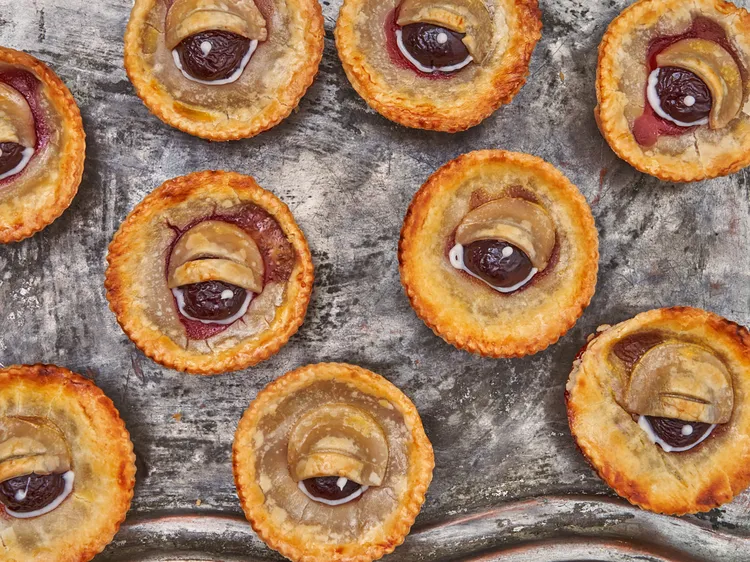

Spooky Cherry Eyeball Pies

Description
Perfect for halloween parties, they are made with piecrust and cherry pie filling
Ingredients
- 2 sheets refrigerated pie dough
- 1 (21 ounce) can cherry pie filling
- 6 fresh or frozen pitted dark sweet cherries
- 1 large egg
- 1 teaspoon water
- 1 small tube white decorator icing with small round tip
- red berry sauce or seedless raspberry/strawberry jam, slightly warmed for drizzling
Steps
- Preheat the oven to 375 degrees F (190 degrees C). Grease a 12-cup muffin tin.
- Roll pie dough out on a work surface. Cut out 12 circles with a 4-inch round cookie cutter.
- Gently press each circle into the cup of a standard muffin tin to form a mini pie shell. Pierce the bottom of each crust a few times with a fork.
- Pre-bake empty shells in the preheated oven until lightly golden, about 10 minutes. Remove muffin tin from the oven and allow for the shells to cool for about 5 minutes.
- Spoon cherry pie filling evenly into the shells. Roll out remaining pie dough and cut out 12 circles with a 3-inch round cookie cutter. Place on top of the pie filling and crimp the edges so filling is fully enclosed.
- Slice dark cherries in half. Place one cherry half, cut-side down, in the center of each mini pie.
- Slice dark cherries in half. Place one cherry half, cut-side down, in the center of each mini pie.
- Whisk egg and water together in a small bowl and brush pastry top and eye lids with the egg wash using a pastry brush.
- Bake mini pies in the preheated oven until crust is golden brown and filling is bubbly, 15 to 20 minutes. Remove from the oven and cool pies in the tin for at least 10 minutes. Transfer cherry pies to a wire rack to cool completely.
- Before serving, pipe a tiny dot on each cherry to create a "glint" in the eye with white icing. Pipe a thin line of white icing along the lower edge of each cherry. Drizzle red berry sauce on a plate to look like a pool of "blood". Set eyeball pie in the center of the plate and enjoy your spooky creation!
Home